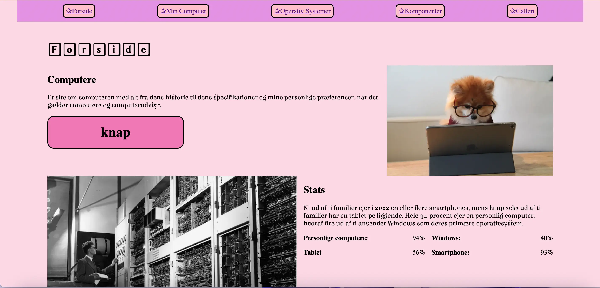

I tema 2 blev vi introduceret til de grundlæggende begreber indenfor HTML og CSS. Udover det lærte vi at arbejde med Figma, filformater til web, designkonventioner, gestaltprincipper, wireframes, og styletile samt fonte og tekstopætning.

Dette projekt var en del af studiestartsprøven. Vi fik udleveret et layoutdiagram og wireframe som vi skulle tage udgangspunkt i til at lave et responsivt website. Vi lærte og arbejdede med CSS grid, flex, media queries og semantisk markup.
Da det var min første gang, lærte jeg de basale CSS regler.